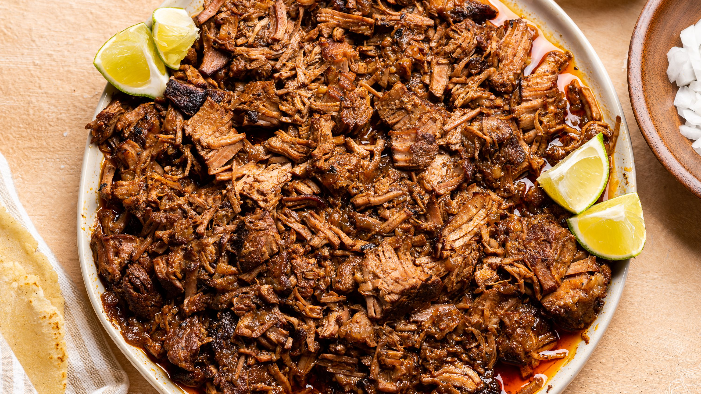

InstantPot Barbacoa Recipe

Description
Delicous beef this tender usually takes hours in the slow-cooker... Not with the InstantPot! 45 minutes is all the cooking time you need for this savory meal.
Ingredients
- 2 Lbs. Chuck Roast (Look for a piece with good marbeling
- 1 Cup Unsalted Chicken Stock
- 3 Chipotle Peppers in Adobo
- Etc.
- (rest of items)
- 2 Bay Leaves
Steps
- Salt and Pepper the roast and sear it on both sides forming a nice crust
- Add onions and garlic into InstantPot and cook with olive oil for 5 minutes
- Put rest of ingredients in InstantPot
- Cook on high pressure for 45 minutes. Allow for 15 minutes of natural releasing
- Serve!